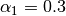

psc585.ps1¶
Problem Set 1: Markov Chains
- class psc585.ps1.Legislature(x, ufunc=<function quadratic_utility at 0x3abc6e0>)[source]¶
Legislature in problem 3
Notes
This class contains a set of legislators with d-dimensional ideal points, and a utility function. It includes methods to compare two policies given the legislators’ ideal points.
Attributes
x (m, d) ndarray Ideal points of legislators ufunc function, optional Function to calculate the utility of a policy relative to an ideal point Methods
- transition(S)[source]¶
Return a transition matrix for a Markov Chain
Parameters : S : (n, d) ndarray
n points on a d-dimensional policy space
Returns : P : (n, n) ndarray
Transition matrix. There is an equal probability of transitioning to any point
Notes
Right now this is VERY slow because this function finds the majority preferred policies by checking every other policy and returning a dense matrix. There is probably a better way to implement this.
- class psc585.ps1.Provinces(D)[source]¶
Provinces in problem 4
Attributes
D (k, k) ndarray Matrix of distances between provinces k int Number of provinces dmax int Maximum distance between provinces. maxstate int Maximum state. States are numbered 0 to  .
.P (2^k, 2^k) sparse array Transition matrix of the Markov chain of revolt probabilities for each province.
- psc585.ps1.p2a_f(sprime, s)[source]¶
Problem 2.a, function f
Parameters : sprime : float
State transitioning to. Between 0 and 1.
s : float
State transitioning from. Between 0 and 1.
Returns : p : float
Transition probability.
Notes
Continuous Markov chain on the unit interval
![[0, 1]](../_images/math/ab178d831a786b92cb4c9ddc2d33578223036f98.png) ,
,
where
 and
and 
- psc585.ps1.p2c_f(sprime, s)[source]¶
Problem 2.c, function f
Parameters : sprime : array, shape (2, )
State transitioning to
s : array, shape (2, )
State transitioning from
Returns : p : float
Transition probability
Notes

where  and .